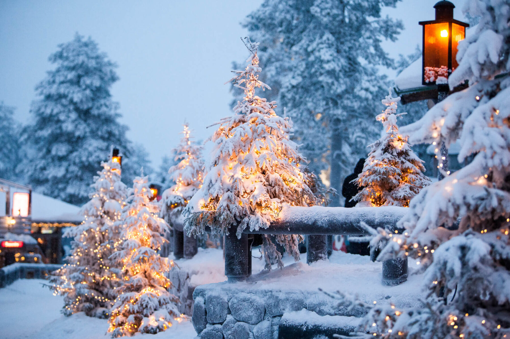

Hover Over Me!
Public Holidays
- 1 January: New Year's Day
- 6 January: Epiphany
- March-April: Easter. Maundy Thursday, Good Friday, Easter Day and Easter Monday. Easter Day is no earlier than 22 March and no later than 25 April.
- 1 May: May Day
- April-June: Ascension Day 40 days after Easter Sunday; always a Thursday, no earlier than 30 April and no later than 3 June.
- May-June: Pentecost. Pentecost is 10 days after Ascension Day; no earlier than 10 May and no later than 13 June.
- June: Midsummer Day. Midsummer Day is celebrated on the Saturday following 19 June.
- 4 November: All Saints’ Day
- 6 December: Finland’s Independence Day
- 25 December: Christmas Day
- 26 December: Boxing Day
Other Holidays
- 6 February: Sámi National Day
- 14 February: Valentine's Day Seven weeks before Easter: Shrovetide
- 8 March: International Women's Day
- 23 March: Nordic Day
- 8 April: Roma National Day
- 9 June: Åland’s Autonomy Day June: Midsummer Eve. Midsummer Eve is celebrated on the day before Midsummer Day.
- 27 July: Sleepy Head Day
- 24 December: Christmas Eve